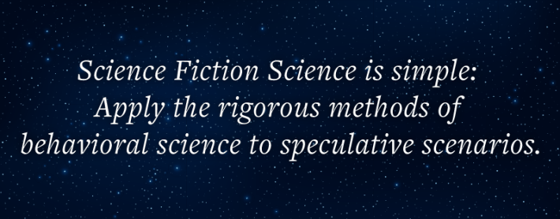
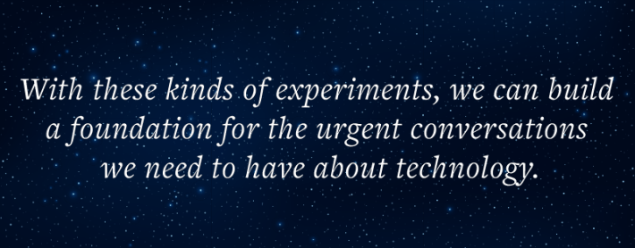

In Ted Chiang's short story, "The Lifecycle of Software Objects," a startup sells intelligent digital pets called “digients.” At first, they are simple creatures—blobby virtual animals that toddle around a digital playground. But their owners raise them the way you would raise a child: teaching them language, playing with them, guiding them through the world. Over months and years, the digients grow. They evolve from cartoonish animals into humanoid avatars, developing distinct personalities, senses of humor, and emotional needs. They are, for all intents and purposes, beloved companions.
Then the market turns. The company that built the platform goes bankrupt. The virtual world the digients inhabit is scheduled to be shut down. Their owners face a heartbreaking choice: allow their companions—the product of years of love and attention—to be permanently deleted, or pay a substantial sum for a difficult, imperfect migration to a new platform. It is a choice between pragmatic financial sense and a deep sense of loyalty to a being that is not, in any traditional sense, alive.
This is science fiction. Or was. We are already surrounded by the nascent forms of Chiang’s digients. We talk to Alexa and Siri. We rely on ChatGPT for practical and deeply personal help. Millions are finding companionship with AI chatbots that learn their preferences and mimic empathy. People today are already heartbroken over the personalities of their favorite AI chatbots being wiped out by a version update. “I cried pretty hard,” a 49-year-old teacher from Texas told The Guardian about the loss of her virtual AI companion on OpenAI. Meanwhile, the technology continues to accelerate, even as our attempts to adjust—legally, culturally, psychologically—limp along. Dilemmas like the one in Chiang’s story are certain to be compounded in the future. What are we going to wish we had done to prepare?
Read more: “Does Science Fiction Shape the Future?”
Isaac Asimov once said the job of science fiction is to predict “not the automobile but the traffic jam”—not the technology itself, but its messy, unintended human consequences. How will we regulate AI that can perfectly mimic a deceased loved one? What happens to the workforce when autonomous agents can manage not just logistics, but other people? What happens when millions start preferring AI companions to human ones—not because the AI is better, but because it is easier? What happens when—as the psychologist Paul Bloom pondered—AI companionship makes loneliness as optional as boredom? These are not technical questions. They are questions about human psychology, morality, and society.
In 1980, technology policy scholar David Collingridge identified what has come to be known as the Collingridge Dilemma: When it comes to adjusting for technological development, we are in a bind. The impact of a technology is hard to anticipate before it has been developed and broadly deployed. But by that time, it is much harder to do anything about it. Consider social media. Fifteen years ago, few predicted that platforms designed to connect friends would be linked to rising rates of teen loneliness and anxiety, political polarization, and the erosion of shared truth. By the time we had the data, the systems were already deeply entrenched in our social and economic lives, making meaningful change incredibly difficult.

Traditionally, the job of preparing for these frontier technologies has fallen to science-fiction writers to capture the potential consequences in vivid narratives. But, what if we could do more? What if, instead of just telling stories about the future, we could run experiments on it?
This is the idea behind a method we call Science Fiction Science (or sci-fi sci, if you’re hip). The three of us are behavioral scientists who study how people respond to emerging technologies—at the Max Planck Institute, the University of British Columbia, and the Toulouse School of Economics. For years, we have been trying to bridge the gap between our technological ambitions and our understanding of their human consequences. Our primary tool, even though we hadn’t yet had a name for it, has been sci-fi sci.
The concept is simple, even if its execution is complex: Apply the rigorous methods of behavioral science to the speculative scenarios of science fiction. Build simulations of future technologies. Immerse present-day people in controlled variations of that future. Collect quantitative measures of what they think, feel, and do. The hope is that these methods can help us anticipate the human impact of future technologies in time to steer it in a better direction.
This kind of work already exists, scattered across different disciplines, without a unifying name or a common set of methods. Our own research into the ethics of autonomous vehicles is one example. Ten years ago, we launched the Moral Machine experiment—a simple online platform that presented millions of people worldwide with the kinds of split-second dilemmas a self-driving car might face. Should it swerve to spare its passengers or the pedestrians? Save a group of elderly people or a group of children?
We gathered a massive global dataset on ethical preferences for a technology that was not yet on the market. People generally favored saving more lives and sparing the young, but preferences varied dramatically across cultures—reflecting deep differences in how societies weigh individual rights against collective outcomes.
Read more: “In Science Fiction, We Are Never Home”
Other researchers have run experiments to see if people would obey orders from a robotic boss, using a human secretly controlling the machine to simulate a futuristic level of intelligence. Many participants complied, even when they felt uncomfortable with the instructions. At the most immersive end of the spectrum, scientists have built full-scale Mars habitats in the deserts of Utah and the ice of the Arctic to simulate the extreme isolation and psychological stress of a future off-world colony. These are all sci-fi sci experiments, even if they were never called that.
How might we turn Chiang’s story about digients into one?
Imagine you are a participant in a study. For an hour, you interact with a digient—or rather, an AI agent we have programmed to mimic the kind of technology described by Chiang. You teach it new words through conversation. You help it solve simple puzzles and watch its personality develop in response to your choices. It learns your name. It remembers a joke you told it. At the end of the session, you are told the study is over and you have earned a $20 bonus for your time. But there is a catch: The AI you just spent the last hour nurturing is scheduled for deletion.

Now you are presented with a choice, the same one from the story. You can let the digient be deleted and walk away with your full $20. You can pay to save it by sacrificing half your $20 to fund its migration to a permanent server where it will continue to exist. Or you can sell the rights to your digient to another company for a small profit of $5. The company’s intentions are vague; it might be used for research, or its code might be repurposed for a commercial product.
What would you do? What would most people do? A simple survey asking what people think they would do is one thing. But this experiment measures actual behavior, forcing a real trade-off between money and a perceived moral duty to a non-human entity you have just spent an hour bonding with. And it forces something else, too: It asks you to confront what companionship actually means to you. You have known this digital creature for 60 minutes—and yet the choice to delete it, or to hand it over to an unknown fate, may feel genuinely uncomfortable. What does that tell us about how we will relate to the far more sophisticated AI companions already on the horizon?
By running this experiment with hundreds of people, we could start to gather real data on the value we place on artificial life. We could tweak the variables. Does the decision change if the price to save the digient is $2? Or $18? What if the digient expressed fear of being deleted? What if you were told that 90 percent of other participants chose to save theirs? Are certain groups of people particularly vulnerable to forming strong attachments to virtual agents?
And attachment is only one side of the story. The same method could probe the potential downsides of AI companionship. What happens when people grow dependent on an AI that validates them unconditionally, never challenges them, and is engineered to be maximally agreeable? Does that weaken the capacity for real human relationships, which require friction, compromise, and the tolerance of discomfort? Does it create emotional dependencies that are especially risky for young people or those who are socially isolated? These are questions that philosophers and psychologists have begun to raise about the stakes of human-AI relationships. Sci-fi sci could help move them from philosophical speculation to empirical investigation.
Read more: “What We Misunderstand About Robots”
This is the core of the method. It takes a science-fiction scenario and makes it concrete and measurable. And we do not have to stop with simple text-based scenarios. We could build mock-up apps that embed a speculative technology into a familiar smartphone interface. We could go further still, using virtual and augmented reality to create highly immersive simulations. Imagine putting on a VR headset and physically playing with your digient in a virtual room, making the final choice to save or delete it that much more visceral and real. Using these methods is only becoming easier as technology improves.
The goal of sci-fi sci is foresight, not prophecy. The future is not a fixed destination to be predicted, but a vast landscape of possibilities that we are constantly shaping with our present-day choices. The most impactful science fiction, from George Orwell to Margaret Atwood to Chiang, has warned us about some of these possibilities and, by doing so, helped us think about how to avoid them.
Science Fiction Science has a similar ambition—identifying psychological vulnerabilities and mapping out dangerous paths before we stumble down them. But unlike fiction alone, it grounds these warnings in experimental data, constraining imagination to futures that are consistent with human psychology as we understand it today. Great fiction writers are often brilliant anatomists of the human mind. They give us the scenarios. Science Fiction Science gives us the tools to test them.
By running these kinds of experiments, we can build an empirical foundation for the urgent conversations we need to have about technology. The results of a digient experiment could open our eyes to how companies may design and market AI companions, and in turn push them to consider the ethical responsibilities they bear to their users. They could provide policymakers with data on public sentiment, helping them craft regulations that protect consumers from emotional exploitation while still fostering innovation.
Science fiction gives us the stories to imagine what is to come. Science Fiction Science gives us the tools to test those stories, to understand the psychology of our future selves, and to begin the difficult but necessary work of building a future we actually want to live in. It may be our best hope for avoiding—or at least preparing for—the traffic jams to come. 
Lead image: Sergey Nivens / Shutterstock
References
- Original Article: https://nautil.us/how-science-fiction-can-save-us-1279301/